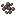
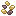
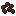
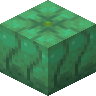
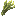

#c:crops
物品标签 · 47 个已收录成员 · 另有 2 个未收录 id
标签成员 (47)
 百香果
百香果bountifulfares:passion_fruit
 接骨木莓
接骨木莓bountifulfares:elderberries青金石莓
bountifulfares:lapisberries
 韭葱
韭葱bountifulfares:leek
 玉米
玉米bountifulfares:maize
 海绵瓜种子
海绵瓜种子bountifulfares:spongekin_seeds

朽老种子bountifulfares:hoary_seeds

玉米种子bountifulfares:maize_seeds

韭葱种子bountifulfares:leek_seeds甜浆果籽
bountifulfares:sweet_berry_pips茶浆果
bountifulfares:tea_berries茶叶
bountifulfares:tea_leaves青金石莓种子
bountifulfares:lapisberry_seeds

海绵瓜bountifulfares:spongekin晶壳麦
eternal_starlight:crinoa
 辛果
辛果eternal_starlight:pungency_fruit乌黍
eternal_starlight:nocturnal_millet遗忘乌黍
eternal_starlight:forgotten_nocturnal_millet
 红辣椒
红辣椒kaleidoscope_cookery:red_chili
 青辣椒
青辣椒kaleidoscope_cookery:green_chili
 番茄
番茄kaleidoscope_cookery:tomato
 番茄
番茄farm_and_charm:tomato
 生菜
生菜kaleidoscope_cookery:lettuce
 生菜
生菜farm_and_charm:lettuce
 稻米
稻米kaleidoscope_cookery:rice
 玉米
玉米farm_and_charm:corn
 洋葱
洋葱farm_and_charm:onion
 灵魂之花
灵魂之花oritech:wither_crop_block
 姜
姜snowyspirit:ginger
 亚麻
亚麻supplementaries:flax
 甜菜根
甜菜根minecraft:beetroot
 仙人掌
仙人掌minecraft:cactus
 胡萝卜
胡萝卜minecraft:carrot
 可可豆
可可豆minecraft:cocoa_beans
 西瓜
西瓜minecraft:melon
 下界疣
下界疣minecraft:nether_wart
 马铃薯
马铃薯minecraft:potato
 南瓜
南瓜minecraft:pumpkin甘蔗
minecraft:sugar_cane
 小麦
小麦minecraft:wheat
 核桃
核桃bountifulfares:walnut
 核桃
核桃caupona:walnut红豆
neapolitan:adzuki_beans
 荧光菇
荧光菇darkerdepths:glowshroom
 松露
松露environmental:truffle
 燕麦
燕麦farm_and_charm:oat

大麦farm_and_charm:barley
使用该标签的配方
无
未收录条目 (2)
c:foods/vegetablec:foods/fruit